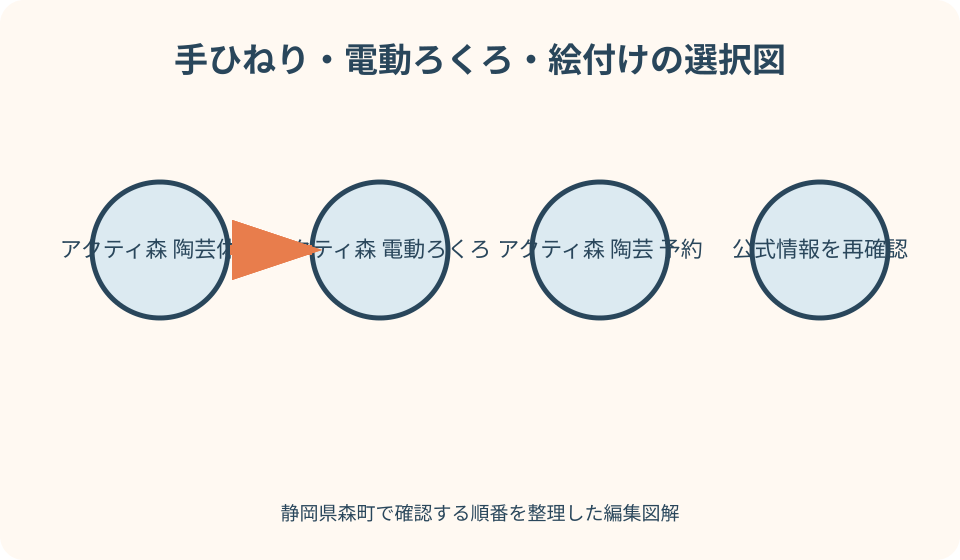
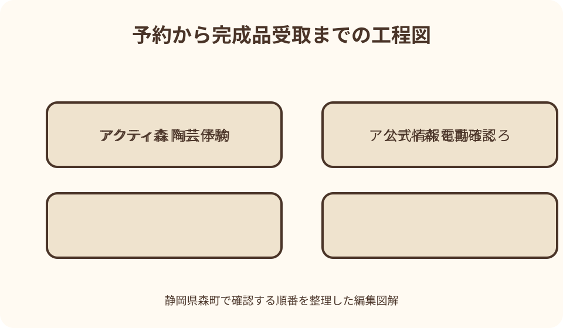

アクティ森｜最終確認 2026-08-10
静岡県森町・アクティ森の陶芸体験ガイド｜手ひねり・電動ろくろ・絵付けの選び方
アクティ森の陶芸は、粘土から形を作りたいなら手ひねり、回転する土を両手で成形したいなら電動ろくろ、用意された器へ模様を加えたいなら絵付けを候補にします。ただし、2026年5月の指定管理者変更後は実施メニュー、対象年齢、所要時間、料金、予約枠、焼成後の受取・発送方法が変わる可能性があります。訪問日と参加者の年齢を伝え、電話0538-85-0115で現行メニューを確認してから出発するのが確実です。
最初に確認すること——2026年の運営変更後は電話で体験枠を確定する
森町公式は、アクティ森が指定管理者の変更などに伴う休場を経て、2026年5月1日にリニューアルオープンしたと案内しています。所在地は静岡県周智郡森町問詰1115-1、営業に関する電話は0538-85-0115です。施設自体の営業と陶芸工房の受付は同じ意味ではないため、開場しているだけで当日制作できるとは考えません。
町の施設紹介ページは手ひねり、絵付け、電動ろくろを挙げ、森町観光協会も手ひねりと電動ろくろを紹介しています。一方、その町ページの更新日は2020年で、体験料は施設側で確認するよう明記されています。2026年8月10日時点の記事では、三方式を候補として扱い、現在の常設・期間限定・休止を断定しません。
予約時は「陶芸をしたい」だけでなく、訪問日、到着予定時刻、人数、参加者全員の年齢、希望方式、車か公共交通かを伝えます。子どもが参加する場合は学年、保護者が一緒に制作するか見守るか、介助や座席上の配慮が必要かも先に相談すると、当日受付で条件が合わない事態を減らせます。
確認結果は、担当者名を求めるのではなく、連絡日、予約時刻、集合場所、持ち物、支払方法をメモします。ウェブの古い料金表や個人の訪問記録より、運営者から得た訪問日向けの案内を優先し、天候や団体利用で変更があり得ることも含めて余裕を持たせます。
手ひねりを選ぶ——粘土の塊から形と厚みを自分で整える
手ひねりは、粘土を押す、伸ばす、積むといった手の動きで器や置物の形を作る方式として考えると選びやすくなります。アクティ森で現在使う粘土量、作れる点数、選べる釉薬、道具は運営者へ確認が必要です。茶碗や皿を必ず作れると決めず、作りたい物の大きさと用途を予約時に伝えます。
左右対称に整えることより、指跡や形の違いを残したい人、親子で工程を相談しながら進めたい人には候補になります。ただし、幼児が自由に粘土遊びをする場と同じではありません。対象年齢、保護者補助の範囲、一人分の席を子どもと共有できるかを聞き、工房の決まりに従います。
形が大きすぎる、壁が薄すぎる、取っ手の接合が弱いと、乾燥や焼成に向かない場合があります。完成イメージを押し通すのではなく、制作前に講師へ実現可能な寸法を尋ね、途中でも厚みや接合を見てもらいます。焼き上がりの縮み方や色合いは制作時と同一ではないことを理解します。
家族で同時に作るなら、全員が別の難しい形へ挑むより、一人は浅い皿、一人は小鉢、一人は模様のある板状作品など、工程が重ならない案を用意します。ただし実際に選べる制作物は当日のメニュー次第です。予約時に写真を送れる窓口があるかも含め、希望を事前相談します。
電動ろくろを選ぶ——回転する土へ集中する時間を確保する
電動ろくろは、回転する粘土へ両手を添えて中心を整え、器の内外から厚みを作る方式です。森町公式は「本格的な電動ロクロ」と表現し、観光協会も体験候補に挙げていますが、現在の台数、対象年齢、一回の制作人数、予約必須かどうかは掲載情報だけでは確定できません。
ろくろは手の位置と力加減が結果に直結するため、参加者全員が同じ時間に始められるとは限りません。講師の説明、順番待ち、作り直し、作品選択が所要に含まれるかを聞きます。帰りのバスや昼食予約を直後に置かず、終了予定から少なくとも移動と手洗いの余白を持たせます。
小さな子どもが電動ろくろを希望する場合、年齢だけでなく、足が床や台へ安定するか、回転部へ安全に手を置けるか、保護者補助が認められるかが判断材料です。対象外なら、手ひねりや絵付けへ替えることを失敗とせず、本人が担当できる工程を施設と相談します。
爪が長いと粘土へ当たりやすく、袖やアクセサリーは回転部の近くで扱いにくくなります。短い爪、肘まで上げられる袖、外せる指輪や腕時計を基本にし、髪は結びます。施設からエプロンやタオルの指定があるかは予約時に確認し、借りられると決めつけません。

絵付けを選ぶ——成形より模様と色の配置へ時間を使う
絵付けは、施設が用意する素地へ線や色を加える方式として、粘土から形を作る手ひねり・電動ろくろと区別します。アクティ森で現在用意される器種、使用する顔料、描ける範囲、焼成後の発色は、当日の説明を確認します。皿、湯のみなど特定形状が必ずあるとは書きません。
形作りより短時間で終わると思われがちですが、下絵を考え、器面へ配置し、修正できる範囲を聞く時間が必要です。所要時間を一般論で固定せず、予約時に受付から退出までの目安を尋ねます。名前や日付を入れたい場合、焼成後に読みやすい線幅を講師へ相談します。
子どもには、紙へ一度描いてから器へ移る方法が落ち着きます。全面を細かな絵で埋めるより、中央の主役、縁の模様、裏面の署名という三箇所に分けると時間配分をしやすくなります。ただし、裏面へ描けるか、重ね塗りできるかは施設の材料と指示に従います。
家族の記念品にするなら、全員で同じ絵をコピーするより、共通の一文字や山・川の輪郭だけを決め、色や配置を各自に任せる方法があります。森町の山並みや吉川を題材にしても、公式ロゴや他者の作品をそのまま写さず、自分の図案としてまとめます。
対象年齢と子連れ——制作者、見守り役、待つ子の三者で計画する
町公式はアクティ森を小さな子どもから大人まで家族で楽しめる施設と紹介していますが、その表現はすべての陶芸方式が全年齢対象という意味ではありません。方式ごとの最低年齢、保護者同伴、補助人数、見学だけの入室可否を電話で確認し、兄弟全員が同じメニューに参加できるとは想定しません。
一人の保護者が二人の幼児を同時に支えられるかは、席配置と工程によって変わります。粘土に触れる子、道具を使う子、待つ子を一人で見る計画に無理があるなら、保護者を増やす、時間を分ける、絵付けへ統一するなど、施設の助言に沿って組み替えます。
制作しないきょうだいが工房内で長く待てるとは限りません。別の保護者と屋内の安全な場所で過ごせるか、途中退室や再入室ができるか、ベビーカーを置けるかを聞きます。屋外遊びを待ち時間の前提にすると雨天に崩れるため、室内の代案も用意します。
汚れを嫌がる子、回転音を怖がる子、説明を長く聞くのが難しい子には、完成品の写真だけを見せて参加を迫りません。粘土の感触、エプロン、座る時間を事前に説明し、当日拒否した場合に保護者と共同制作へ変えられるか、キャンセル扱いはどうなるかを予約時に確認します。
予約と所要時間——制作時間ではなく受付から手洗いまで押さえる
予約では開始時刻だけでなく、何分前にどこへ集合するかを確認します。施設入口から体験センターまでの移動、駐車、受付票、会計、説明があるため、到着時刻と制作開始は同じではありません。初訪問なら道路の遅れを見込み、遅刻時の扱いも先に聞きます。
所要時間は、説明、制作、作品名札、釉薬や仕上げの選択、片付け、手洗いまでを含むかで変わります。手ひねりと絵付けを同じ分数で見積もらず、電動ろくろは交代や講師確認も考えます。公式から得た目安へ移動余白を加え、次の予定を詰めません。
当日受付が可能と案内された場合も、席を確保した予約と同じではありません。団体予約や材料在庫、講師配置で受けられない可能性を残します。確実に体験したい日は予約し、予約なしで訪れる日は陶芸以外の過ごし方を最初から一つ用意します。
キャンセル料、人数変更期限、遅刻時の短縮、悪天候時の扱いは、料金と同じく現行運営者へ確認します。口頭予約の内容は同行者へ共有し、一人だけが情報を持つ状態を避けます。代表者の電話番号、参加人数、子どもの年齢を出発前日にもう一度確認します。

制作後の受取と発送——作品は当日持ち帰れない前提で質問する
粘土で成形した作品は、一般に乾燥や焼成の工程が必要ですが、アクティ森での工程、完成時期、受取方法は運営者の説明で確定します。当日そのまま持ち帰れると考えず、完成までのおおよその期間、窯の都合で遅れる可能性、連絡方法を受付時に確認します。
受取は施設へ再訪するのか、発送を選べるのか、送料をいつ支払うのかを質問します。複数人分を一箱へまとめられるか、別住所へ送れるか、破損時の扱いはどうなるかも重要です。発送可否や料金を過去の案内から流用せず、制作日の条件を書面で残します。
作品を識別するため、受付番号、作品の特徴、選んだ仕上げ、配送先控えを撮影してよいか確認します。器底へ署名する場合も、施設指定の場所と方法に従います。完成後の色や形が制作直後と変わること、焼成中の変形や割れの可能性について説明を受けます。
絵付けも焼成が必要な方式なら、同様に後日受取となります。方式名だけで即日持ち帰りを判断せず、当日の材料と工程を聞きます。旅行最終日に参加する人は、再訪できないことを予約時に伝え、発送できない場合は別メニューへ変更します。
服装と持ち物——爪、袖、髪、靴を土と回転部に合わせる
服装は、汚れても困らず、腕を動かしやすいものを選びます。長い袖は肘まで確実に上げ、ひもやフリルが作業面へ垂れないようにします。白い外出着のまま参加せず、施設が貸す物を推測せず、エプロン持参の要否を電話で聞きます。
爪は短く整え、指輪、腕時計、垂れるブレスレットは外せる状態にします。電動ろくろでは髪をまとめ、手ひねりでも髪が粘土へ触れないようにします。外した貴重品を机へ置かず、小さなファスナー袋へ入れて同行者が管理します。
足元は、工房と駐車場の往復を安全に歩ける靴を選びます。粘土や水で床が滑る可能性を考え、かかとが不安定な靴は避けます。雨の日は濡れた靴底を入口でよく確認し、工房内の指示に従います。替え靴が必要かは施設へ尋ねます。
持ち物は、予約控え、タオル、飲み物、子どもの着替え、作品案の簡単な紙を基本候補にします。ただし工房へ飲食物を持ち込まず、置き場を確認します。写真撮影は講師、他の参加者、設備が写るため、開始前に許可される範囲を聞きます。
雨天日の組み立て——屋内体験でも道路と混雑は別に考える
陶芸は屋内で行われる候補ですが、雨なら無条件に実施されるとは断定できません。町公式は台風などの悪天候や団体予約で体験時間が変わる場合があると案内しており、2026年の現行運用も来場前に確認が必要です。警報や道路状況が悪い日は、予約済みでも施設へ連絡します。
雨天は屋外体験から陶芸へ希望が集中しやすいため、当日変更だけに頼りません。陶芸を第一目的にするなら早めに予約し、屋外目的で訪れるなら、和紙など現在実施される別の屋内創作があるかを事前に尋ねます。旧ページに載る全メニューが継続しているとは限りません。
濡れた傘、レインコート、子どもの着替えを工房の席へ持ち込むと作業空間が狭くなります。車内や指定置き場で荷物を整理し、必要な物だけを小さな袋へまとめます。体験後に濡れた衣服へ戻らないよう、着替えの順番も考えます。
公共交通利用では、雨天時のバス遅延と待合場所も確認します。町公式の旧案内には遠州森駅からアクティ森行きバス17分とありますが、現行ダイヤは町営バス公式で訪問日を指定して調べます。帰りの便へ間に合わせるため、制作終了時刻を施設へ伝えます。
満席・休止時の代案——創作の目的を形、色、地域文化へ分ける
希望方式が満席なら、まず同日の別時間、次に別方式、最後に別日という順で相談します。電動ろくろが満席でも、形を作る目的は手ひねりで満たせる場合があります。手ひねりが難しくても、色や図案を残す目的なら絵付けが候補になります。ただし各方式の当日実施を施設へ確認します。
陶芸全体が休止なら、旧案内にある和紙漉きや草木染めが現在利用できるかを問い合わせます。実施されていれば、土から紙や布へ材料を替えても、森町の手仕事へ触れる目的は残せます。掲載されているから開いていると決めず、材料在庫、対象年齢、予約を改めて確認します。
施設内の創作が取れない場合は、森のよんな市で森町の工芸品を見て、制作者や産地表示を読む時間へ替える方法があります。購入を義務にせず、器の形や釉色を観察し、後日自分が作りたい物のメモを残します。飲食や買い物の営業も現地案内を優先します。
完全休館や道路事情で来場できない日は、無理に周辺へ向かわず、森町観光協会の施設一覧から町なかの文化施設や寺社を選び直します。陶芸体験を一日の成否にせず、予約を取り直す日と町を歩く日を分ければ、安全と地域理解の両方を守れます。
良い点——森町の文化を作品の工程として持ち帰れる
アクティ森の陶芸体験の良い点は、完成品を買うだけでなく、形、厚み、模様を決める工程へ参加できることです。町公式は陶芸を森町の文化の一つと位置づけています。制作中の迷いも含め、器ができるまでに人の手と窯の工程があることを具体的に知れます。
手ひねり、電動ろくろ、絵付けは、同じ陶芸でも集中する場所が異なります。形を一から作る、回転と力加減を学ぶ、器面へ図案を組み立てるという違いがあるため、年齢や経験だけでなく、その日に何へ集中したいかで選択できます。
雨の日にも候補となる屋内創作であり、家族が同じ机を囲んで別々の作品を考えられる点も魅力です。ただし、屋内であることと予約不要は同義ではありません。良さを確実に生かすには、座席と方式を先に確保し、子どもの待ち時間まで設計します。
作品が後日届く方式なら、訪問日の思い出が時間を置いてもう一度戻ってきます。届いた器はすぐ使用せず、施設から渡される取扱説明を確認し、食品用として使えるか、最初の洗い方、電子レンジ等の可否を運営者の案内に従います。
注文したい点——現行メニューと完成品受取条件の一元表示
利用者として注文したい点は、2026年の新体制で実施する陶芸方式を、更新日付きで一画面にまとめることです。手ひねり、電動ろくろ、絵付けごとに、対象年齢、定員、予約要否、受付時刻、所要の範囲が並べば、家族が電話前に希望を整理できます。
料金は税込額だけでなく、粘土量、焼成する作品数、仕上げ、送料が含まれるかを分けて示すと比較しやすくなります。追加作品や発送箱が別料金なら、その条件も同じ場所にあると、現地で予算を超えて作品を減らす判断が少なくなります。
完成品については、標準的な完成時期、施設受取の期限、発送可能地域、梱包、連絡方法を予約画面で選べると安心です。焼成結果が制作時と変わる可能性も、予約前と当日の両方で説明されれば、完成写真だけを期待する誤解を減らせます。
運営変更前のページが検索に残る状況では、旧情報へ「現在の内容はこちら」という導線を付けることが重要です。利用者側も古いページを批判するだけでなく、確認日とURLを見て、新しい町案内、現行施設、電話確認の順に情報を更新する必要があります。
対案・結論——方式を一つ決め、受取までを予約時に確認する
初めてなら、参加者ごとに作りたい物を一つ描き、手ひねり、電動ろくろ、絵付けのうち第一候補を決めます。その上で施設へ電話し、訪問日の実施、対象年齢、予約、料金、所要、服装、完成品の受取・発送を一続きで確認します。どれか一項が合わなければ第二候補へ替えます。
当日は開始時刻より前に到着し、受付で作品数、仕上げ、追加費用、受取方法を再確認します。制作中は講師へ厚みや接合を見てもらい、終了後は受付番号と配送先控えを残します。帰宅するまでではなく、作品を受け取るまでが体験です。
子連れでは、全員同じ方式へ揃えることより、安全に座れるか、待つ子を誰が見るかを優先します。雨天時は工房が開くかだけでなく道路とバスを確認し、満席なら別時間、別方式、別の屋内創作、別日という順に縮めます。
料金や年齢条件を過去記事から断定せず、2026年5月以降の現行運営者を最終確認先にします。森町公式と観光協会は体験の位置づけを知る資料、電話確認は訪問日の可否を決める資料として使い分けることが、最も確実な準備です。
大石の視点——きれいな完成品より、判断できる工程を残す
私なら、子どもへ見本どおりに作ることを求めず、何を入れる器か、誰が使うか、どこを一番見てほしいかを最初に聞きます。用途が決まると、大きさ、縁、模様の判断に理由が生まれ、形が少し揺れても本人の作品として説明できます。
電動ろくろで形が崩れたり、手ひねりで予定と違う器になったりしても、講師の助言を受けてどこを直したかを記録します。体験していない人へ成功談を作らず、公式に確認した条件、当日の説明、自分の選択を分けて残すことが、次の訪問者にも役立ちます。
森町で陶芸に触れる意味は、短時間で上手な器を得ることだけではありません。町が文化として紹介する手仕事を、土、手、乾燥、窯という時間の連なりで理解することです。発送を待つ期間も含め、店頭の器を見る目が少し変われば体験の価値は続きます。
予約時に聞くべき最後の質問は「何円ですか」だけではなく、「私たちの年齢構成と帰りの時刻で、どの方式なら受取まで無理がないですか」です。運営者の答えをもとに一つへ絞り、できなければ別日に回す。その余白が、家族の制作を急がせない計画になります。
公式情報・確認先
掲載内容は次の一次情報を基礎に整理しました。営業、料金、催し、交通は変わるため、出発前または手続き前にリンク先で最新情報を確認してください。
- 静岡県森町 森町体験の里 アクティ森（静岡県森町、2026-08-10確認）
- 静岡県森町 アクティ森リニューアルオープン（静岡県森町、2026-08-10確認）
- 静岡県森町 観光案内・地図（静岡県森町、2026-08-10確認）
- 静岡県森町観光協会 森町体験の里アクティ森（静岡県森町観光協会、2026-08-10確認）
- 静岡県森町観光協会 観光案内（静岡県森町観光協会、2026-08-10確認）
- アクティ森 現行公式サイト（actymori.co.jp、2026-08-10確認）